MAT135B Midterm 2 Solutions
Problem 1
a) The state space is S={1,2,3,4} and the distribution on 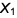 is
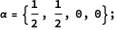
b) The transition matrix is given by
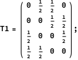
if the chairs are arranged clockwise and
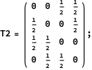
if counterclockwise.
The distribution at in the two cases is given by
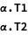
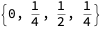
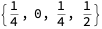
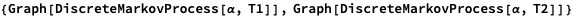
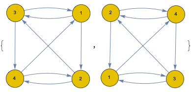
c) The probability 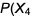 = 1 and 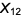 = 1) is given by (α 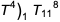or
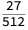
Problem 2
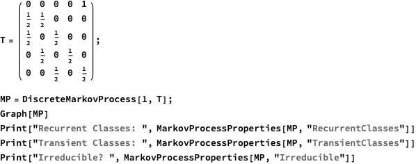
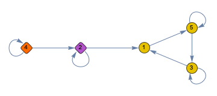
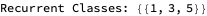
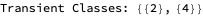
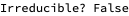
Problem 3
Specify the offspring distribution.
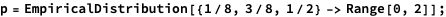
Find the mean at time n.
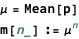
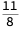
a) Find the mean population at time 2.
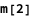
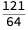
Find the log-transformed MGF of the offspring distribution.
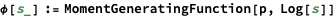
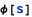
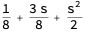
Find the probability of extinction by time n.
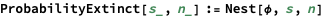
b) Find the probability of extinction by time 3.
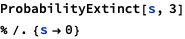
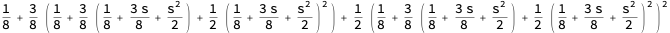
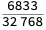
c) Find the probability of extinction eventually.
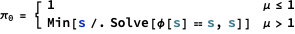

d) The probability that the event dies out eventually, given it has 4 individuals at time 3 is, by independence of each individual’s lineage, just
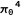
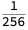
e) The expectation at generation 4, given that the population at generation 3 is 4, is simply the sum of the expectations of each individual’s offspring, which is given by the mean μ. By linearity of expectation, we get
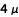
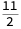
Problem 4
a) The state space is the naturals with zero N ∪ {0}. The distribution of is just
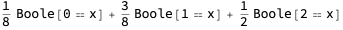
b) The {0} state is recurrent and the rest of the states are transient. This Markov chain is not irreducible because it has two communicating classes: {0} and N.
c) The transition probability 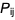 for j=0 and i ≥ 0 is 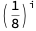 because each of the i individuals must independently have 0 offspring.
d) We can enumerate all possible trajectories to obtain this answer:
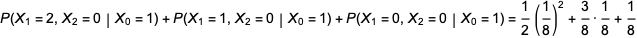
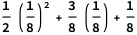
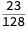